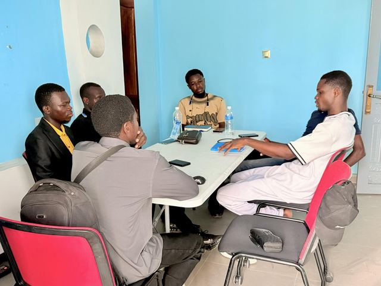
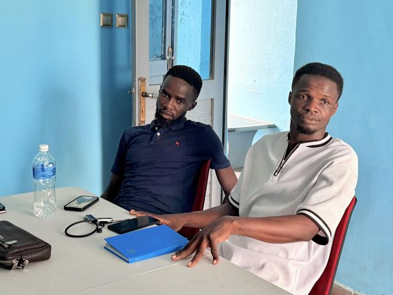
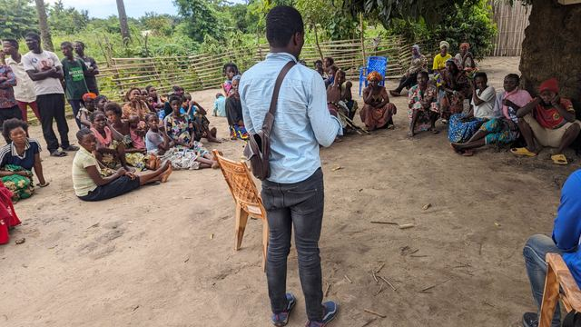
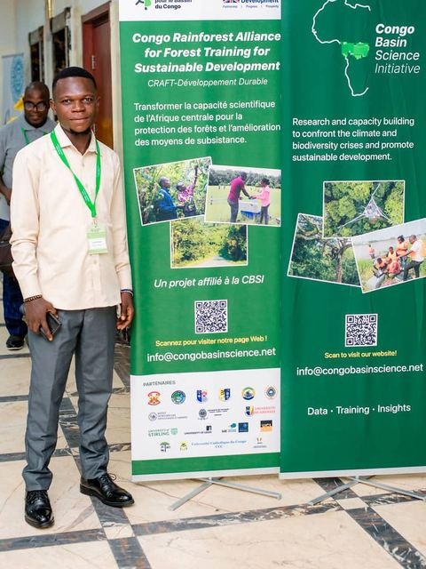

Accueil / À propos
Qui sommes-nous
À propos de BEGCED
Une structure congolaise au service d’un développement mieux planifié, mieux construit et plus durable.
Qui sommes-nous ?
BEGCED est une structure congolaise spécialisée dans la conception, l’étude, l’accompagnement et l’exécution de projets dans les domaines de la géomatique, du génie civil, de l’environnement et du développement numérique.
Nous intervenons auprès des institutions publiques, des entreprises privées, des organisations non gouvernementales, des communautés locales, des universités, des projets de développement et des partenaires techniques et financiers.
Notre ambition est de contribuer à une République démocratique du Congo mieux planifiée, mieux construite, mieux protégée sur le plan environnemental et mieux connectée grâce à la maîtrise locale des données, des technologies et de l’innovation.
BEGCED réunit des spécialistes en géomatique, environnement, génie civil, développement informatique, gestion, administration, ressources humaines et communication afin de proposer des solutions intégrées, adaptées aux réalités locales.
« De la donnée à l’action. »
Concevoir, analyser, exécuter et innover pour un développement durable en République démocratique du Congo.
Au quotidien










Notre vision
Devenir une référence congolaise en ingénierie, géomatique, environnement et innovation numérique, capable de concevoir et de mettre en œuvre des projets à fort impact au service du développement durable.
Notre mission
Produire des études fiables, exécuter des projets de qualité, développer des solutions numériques utiles et renforcer les compétences locales dans les domaines du territoire, des infrastructures, de l’environnement et de la technologie.
Nos valeurs
- Rigueur technique
- Innovation
- Ancrage local
- Transfert de compétences
- Intégrité
Vous avez un projet à étudier, une carte à produire, une infrastructure à concevoir ou une solution numérique à développer ?
Parlons-en.